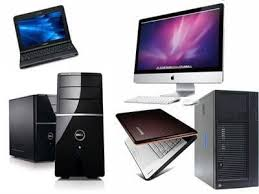

Mision
La misión de TechWord y del equipo humano que lo conforma, tiene como objetivo principal, otorgar a nuestros clientes seguridad y confianza en el servicio de mantenimiento, reparación, modernización e instalación de ascensores y escaleras eléctricas. Trabajando con altos estándares de calidad, experiencia y transparencia, para la entrega de un servicio de excelencia.
Vision
La meta de nuestra organización es la satisfacción plena de nuestros clientes, ya sea bien con la compra de cualquiera de nuestros equipos ascensores y escaleras eléctricas, o bien al contratar nuestros servicios técnicos especializados en mantenimiento preventivo o correctivo de sus equipos.
Objetivo
Nuestro objetivo es establecer relaciones duraderas con nuestros clientes atendiendo a sus necesidades y mejorando continuamente la calidad de nuestros servicios.

Se realiza servicios tecnico de laptops, Monitor, CPU, entre muchas cosas mas:
Reparacion tecnica, segura y confiable

Porque tus equipos electronicos deben estar en manos de verdaderos profesionales